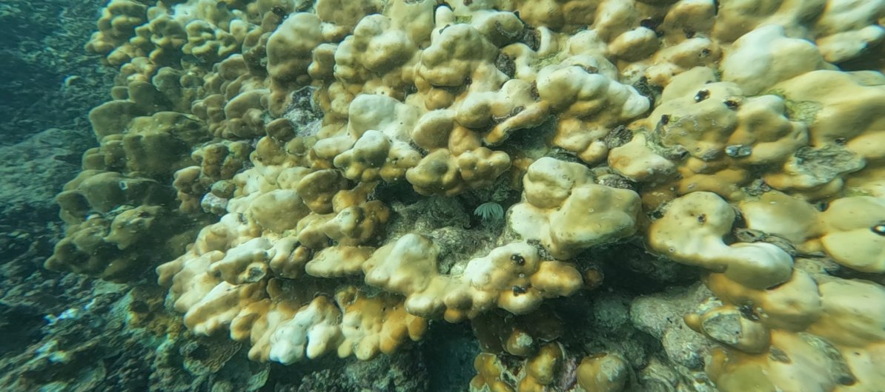
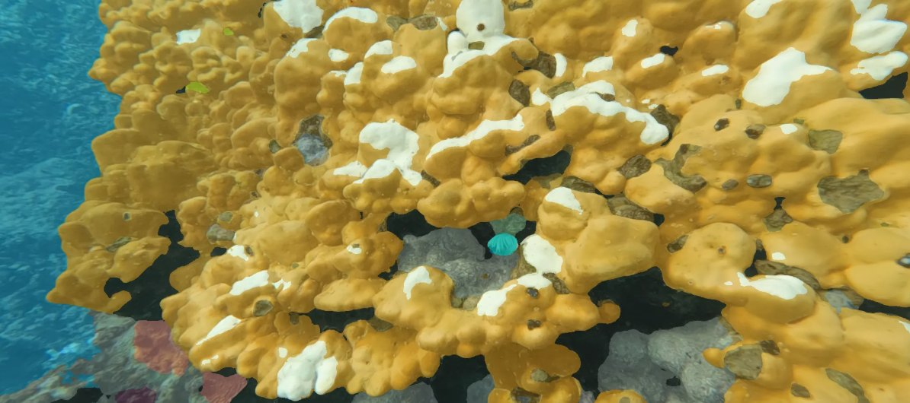
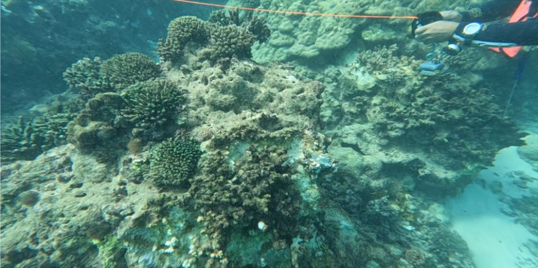
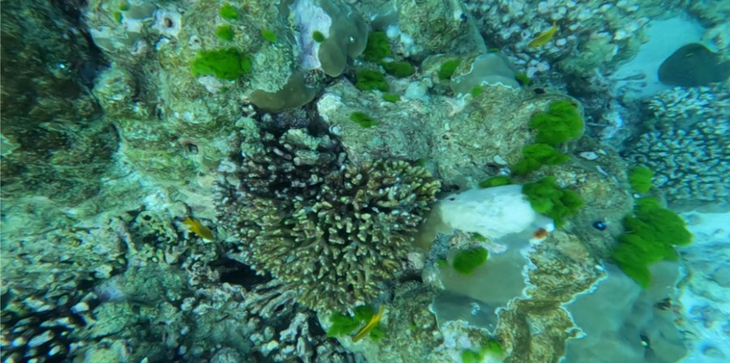

How much live coral is visible, and where is it bleached? SeaQuery pairs reef images with measurements from segmentation so that readers can check the model’s captions and answers against the image.
Technical summary
Narrated summary · 5:07. Captions are included in the video.
From a reef image to a measurable answer
SeaQuery combines a segmentation path and a vision-language path on the same image. Cover of live, bleached and dead coral and algae, and the crown-of-thorns starfish count, are computed from the segmentation mask and supplied to the language model.
Captions and answers therefore reference measured quantities and can be verified against the segmentation output.

Input image
Segmentation overlay- Live coral 70.55%
- Bleached coral 7.77%
- Dead coral 6.2%
- Algae 0.15%
- Crown-of-thorns starfish 0
is the reef healthy?
Sure, the reef is considered healthy with a high coral cover of 70.55%.
Reef-image comparisons
95.0%Captioning score+17.6 over the segmentation path
39.8%VQA exact match+4.8 over the vision-language path
R² ≥ 0.77Metric agreementall five ecological metrics
Vision-language answers with and without metric conditioning

Vision-language path only
does the coral show signs of bleaching?
yes
how severe is the bleaching?
very

SeaQuery dual path
is this a healthy coral reef?
The reef shows some stress with 20.8% live coral coverage.
are there signs of bleaching?
Bleached coral accounts for 1.5% of the reef.
From Fig. 5 of the paper. Each panel uses a different reef image.
Questions & answers
- Where do the percentages in an answer come from?
- SeaQuery calculates coral and algae cover from the segmentation mask. The language model receives those values alongside the reef image when generating an answer.
- Do the two examples in Figure 5 show the same reef?
- Each panel shows a different reef image. The examples illustrate how the answers are phrased with and without metric conditioning. The aggregate captioning and question-answering scores summarize performance across examples.
Cite this paper
@inproceedings{eltobgui2025seaquery,
title = {Vision-Language Models for Underwater Ecological Monitoring},
author = {ElTobgui, Rim and Iacoponi, Saverio and Javid, Sajid and Renda, Federico and De Masi, Giulia and Dias, Jorge},
booktitle = {IEEE International Workshop on Metrology for the Sea (MetroSea)},
year = {2025},
doi = {10.1109/MetroSea66681.2025.11245715}
}